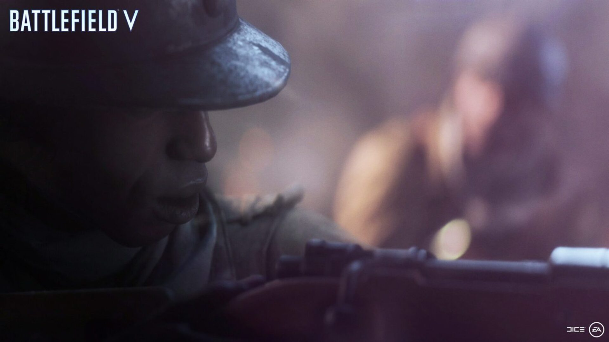
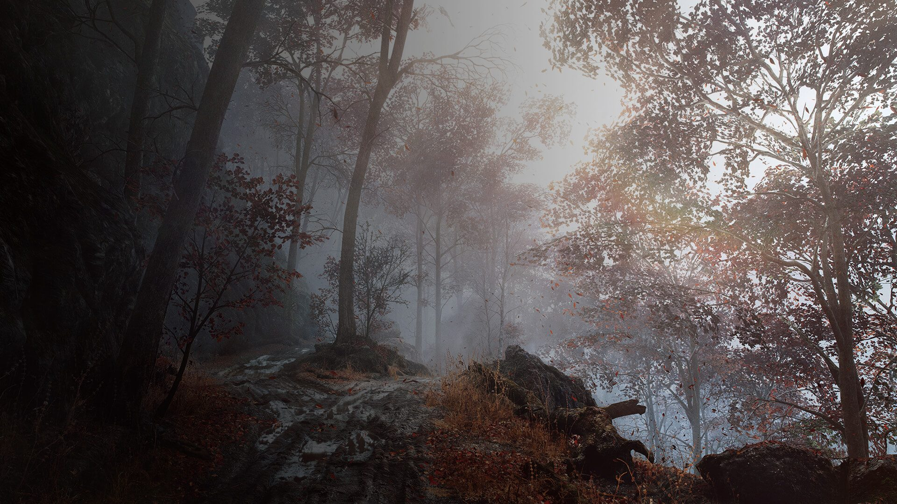

| Character | Deme Cisse |
|---|---|
| Country | Free French Forces |
| Origin | Senegal, Africa |
| Location | Southern France |
| Year | 1944 |
| Mission | Liberate French Territory |
Deme Cisse adalah prajurit dari pasukan kolonial Afrika yang tergabung dalam Free French Forces untuk membantu membebaskan Prancis dari pendudukan Nazi.
Bersama rekan-rekannya, ia bertempur di garis depan, menghadapi musuh dengan keberanian tinggi meski sering diperlakukan tidak setara oleh pasukan sekutunya sendiri.
Perjuangan Tirailleur bukan hanya tentang merebut wilayah, tetapi juga tentang pengakuan, kehormatan, dan pengorbanan yang selama ini dilupakan sejarah.
